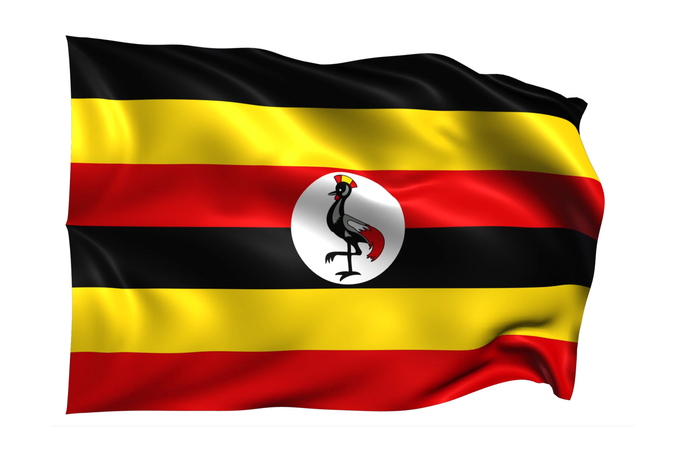
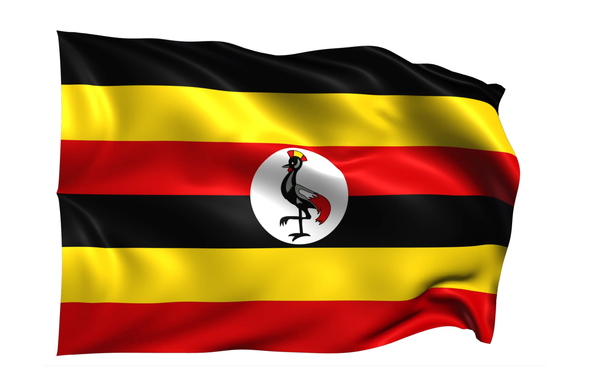
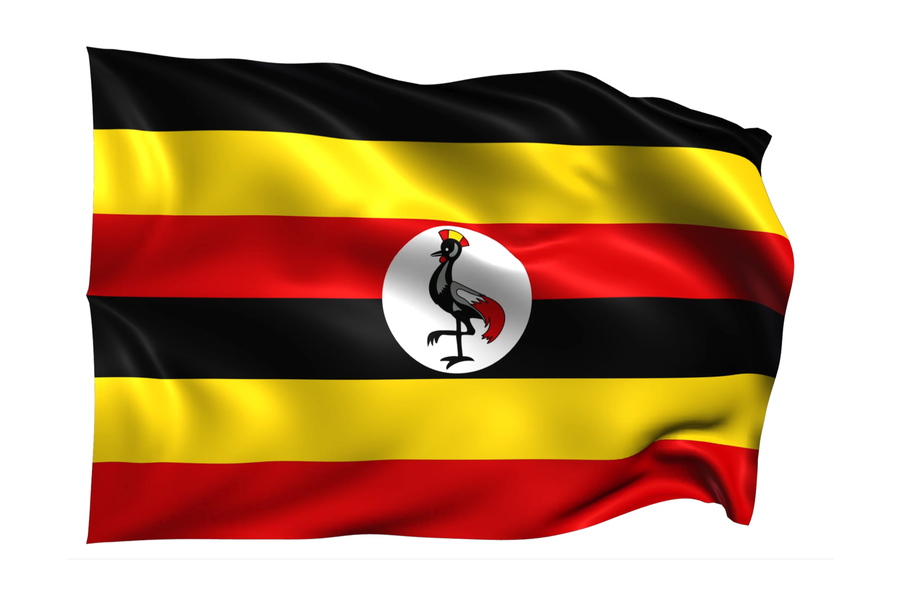
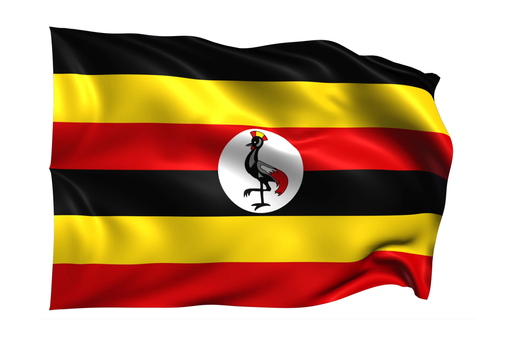

Nilotics also known as the Nilotics people refer are primarily found in the northern and northeastern regions of Uganda.The Nilotics are believed to have migrated from areas of Nile Valley like Sudan although it took numerous years to reach their destinations.
There are many tribes under Nilotics and these include; Acholi, Langi, Karimojong, Pokot, Alur, Jie and Dodoth among others.
NOTE: Under the Nilotics, lie the Nilo-Hamites which are a mixture of the Nilotics and Hamites ethnic groups.
The Bantu had various characteristics and these include;
In conclusion, I hope I have you enough information about the Nilotics ethnic group. For more on, you can use media platforms like Youtube, Meta AI and others.